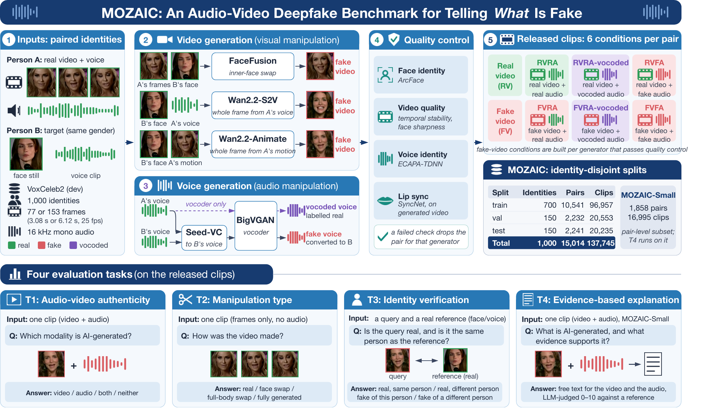
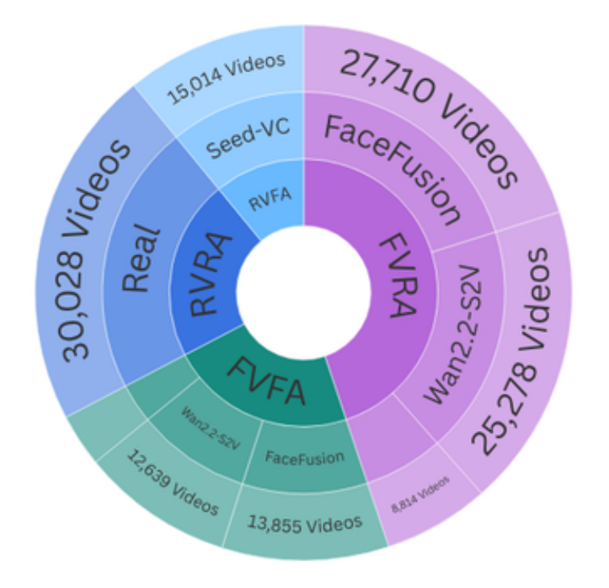
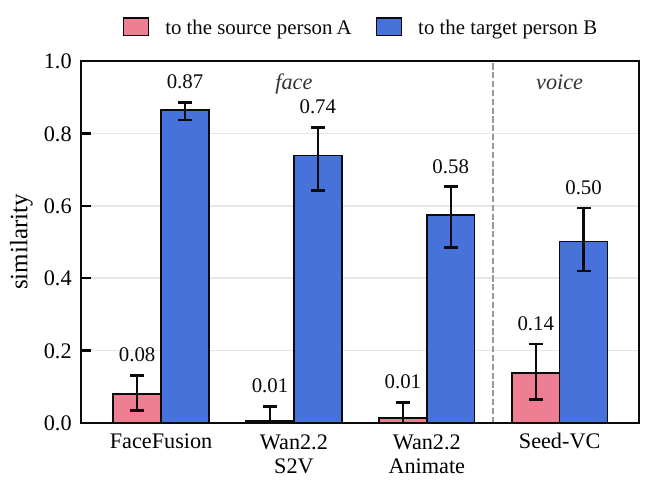
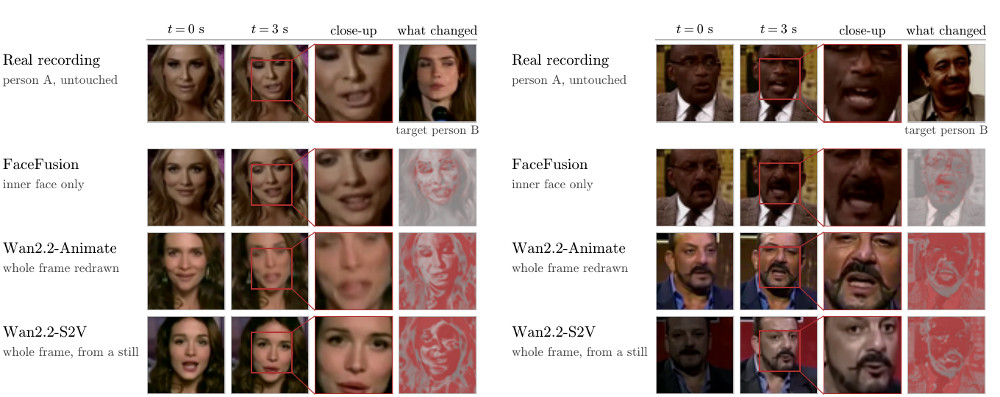
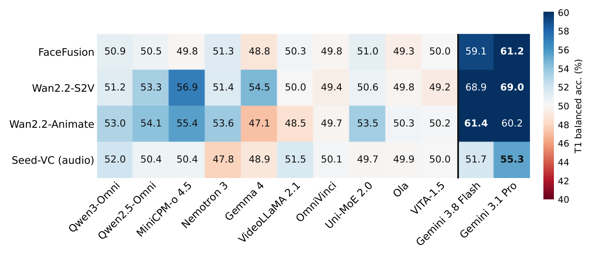
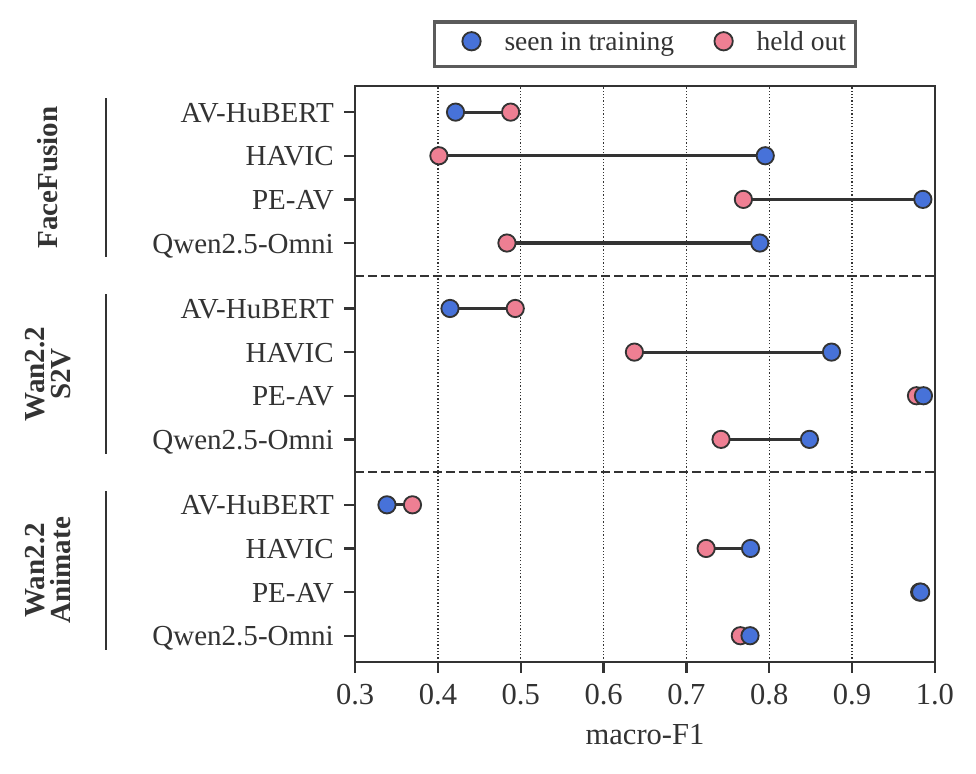
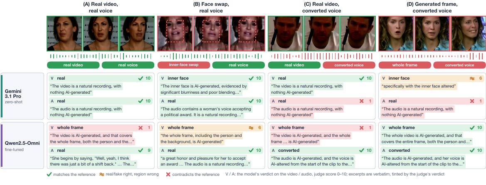

T1
Audio-video authenticity
Which part of this audio-visual clip, if any, is AI-generated or manipulated?
- the video
- the audio
- both
- neither
1Vector Institute, Canada 2Ontario Tech University, Canada
MOZAIC gives every clip a four-way label (real or fake video × real or fake audio), so a detector's score can be traced to the picture or the sound, and asks four questions: is it fake, what kind, whose identity, and why.

Audio-video (AV) deepfakes can fake the face, the voice, or both. Most benchmarks only ask whether a clip is real or fake, so they cannot show whether a detector relies on the picture, the voice, or encoding traces.
We present MOZAIC, a paired benchmark with a four-way label (real/fake video × real/fake audio) on every clip, so each modality's contribution can be measured directly. Fakes cover inner-face swapping, whole-frame video diffusion and voice conversion. The train, validation and test splits have disjoint identities. MOZAIC has 137,745 clips from 15,014 source pairs and four tasks: T1 audio-video authenticity, T2 manipulation type, T3 identity verification and T4 explanation.
We evaluate 12 omni-modal LLMs (MLLMs) zero-shot and five trained detectors. Zero-shot, the best MLLMs reach 35.6% on T1, 41.0% on T2, 47.5% on T3 and 5.15 out of 10 on T4, and catch fake video far more often than fake audio (43.6% vs 7.5%). With training, the best detectors reach 98.4% on T1 and 99.9% on T2, and LoRA fine-tuning lifts Qwen2.5-Omni to 83.4%, 73.6% and 75.8% on T1–T3; its explanation score rises from 4.42 to 6.98. The best T1 detector falls to 78.3% when the face-swap generator is held out of training, so generalization and explanation remain open. We release the dataset, a compact MOZAIC-Small split, code, training recipes, and prompts.

(a) Clips by label and generator.

(b) Identity transfer.

Clips are 3.08 s (77 frames) or 6.12 s (153 frames), 224×224 at 25 fps, with 16 kHz sound. The splits are by person: 700, 150 and 150 identities in train, val and test (96,957, 20,553 and 20,235 clips), half men and half women in each. MOZAIC-Small has 16,995 clips (21.0 hours) from 1,858 whole pairs of the same 1,000 identities, with 47,087 questions for T1 to T4.
The same test pair in all four versions. Pick the generator for the fake face; one clip plays at a time.
Animate shows another test pair, in all four versions.
Web copies for viewing; the released clips are unchanged.
Each card shows the right answer to one real test question.
Which part of this audio-visual clip, if any, is AI-generated or manipulated?
Which part of this video, if any, was generated or altered by AI?
Is the face (or voice) in clip 1 real or fake, and is it the same person as in clip 2?
Which parts of this audio-visual clip, if any, were generated or altered by AI, where, and what in the clip shows it?
“Only the inner face of the video is AI-generated; the hair, head, body and background are untouched. … While she speaks, her facial features look somewhat soft and blurry …”
T1 to T3: accuracy on the full test split. T4: judge score out of 10 on the MOZAIC-Small test split. The fine-tuned model is a single training run.
| Model | T1 | T2 | T3 | T4 |
|---|---|---|---|---|
| Qwen3-Omni-30B-A3B | 18.52% | 34.13% | 28.22% | 4.22 |
| Qwen2.5-Omni-7B | 19.63% | 33.60% | 32.21% | 4.42 |
| MiniCPM-o 4.5 | 24.00% | 33.48% | 32.26% | 4.39 |
| Nemotron 3 Nano Omni | 18.70% | 33.94% | 32.92% | 4.50 |
| Gemma 4 12B | 18.18% | 33.27% | 29.65% | 4.12 |
| OmniVinci | 16.63% | 30.05% | 30.04% | 4.17 |
| Uni-MoE-2.0-Omni | 29.81% | 31.21% | 26.08% | 4.33 |
| Ola-7B | 32.50% | 32.71% | 22.45% | 4.02 |
| VITA-1.5 | 17.35% | 31.99% | 22.51% | 4.52 |
| VideoLLaMA2-AV | 30.88% | 29.62% | 29.19% | 4.41 |
| Gemini 3.1 Pro | 35.58% | 36.68% | 47.51% | 5.15 |
| Gemini 3.8 Flash | 31.56% | 40.98% | 40.92% | 5.09 |
| Qwen2.5-Omni-7B + LoRA, trained on MOZAIC-Small (single run) | 83.8% | 78.3% | 75.6% | 6.98 |
| Most common answer | 33.39% | 33.22% | 30.04% | – |
Per generator, zero-shot models barely beat chance; trained detectors do well in distribution but lose much of it on a generator held out of training.


T4 asks a model to say which part of a clip is fake, where, and what shows it. Four test clips, two models.

MOZAIC pairs every source clip with all four real/fake combinations of video and audio, plus a vocoded control, so a score can be traced to the video or the audio a model actually uses. Measured this way, today's omni-modal LLMs are near chance zero-shot: the best reaches 35.6% on the four-way task, fake voices mostly go unnoticed, and the open models' free-text explanations score below a baseline that calls everything real. Trained detectors reach up to 98.4% in distribution, but the best one loses 20 points on a held-out face-swap generator.
The repository has the code to generate the clips, build the questions, train the baselines, and run and score every model; each folder has its own README.
git clone https://github.com/VectorInstitute/mozaic.git
cd mozaic && uv sync
# run a model on T1, then score its answers (no model needed to score)
python -m mozaic.evaluation.run_inference --config gemini_3_8_flash --task t1
python -m mozaic.evaluation.run_eval --config gemini_3_8_flash --task t1
# T4 on MOZAIC-Small: answers, the judge, then the scores
python -m mozaic.evaluation.run_inference --config gemini_3_8_flash --task t4 --subset small
python -m mozaic.evaluation.judge.run_judge --config gemini_3_8_flash --task t4 --subset small
python -m mozaic.evaluation.run_eval --config gemini_3_8_flash --task t4 --subset small
# train a baseline on MOZAIC-Small
torchrun --nproc_per_node=4 -m mozaic.training.run_train --config avhubert/t1_ln --subset smallThe code is under the Apache License 2.0. The dataset is on Hugging Face under CC BY-NC 4.0. Anyone shown in a clip can ask for it to be removed.
To cite MOZAIC:
@misc{mozaic2026,
title = {{MOZAIC}: An Audio-Video Deepfake Benchmark for Telling What Is Fake},
author = {Raza, Shaina and Hafez, Mohamed and Radwan, Ahmed and Elgazzar, Khalid and Hume, Kathryn},
year = {2026},
note = {Project page}
}Resources used in preparing this research were provided, in part, by the Province of Ontario, the Government of Canada through CIFAR, and companies sponsoring the Vector Institute (vectorinstitute.ai/#partners).
This research was funded by the European Union's Horizon Europe research and innovation programme under the AIXPERT project (Grant Agreement No. 101214389), which aims to develop an agentic, multi-layered, GenAI-powered framework for creating explainable, accountable, and transparent AI systems.